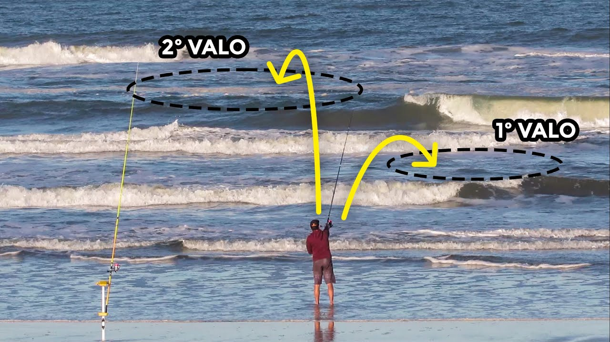

Buscando sua próxima janela
—Consultando os horários de maré…
O local escolhido fica salvo neste aparelho.
AO RITMO DO MAR · SURFCASTING
EDIÇÃO PROTábua de maré oficial, períodos solunares, recomendação dinâmica de equipamento e diário de capturas em tempo real.
Consultando os horários de maré…
Carregando local…
LEITURA DA PRAIA
Quatro pistas para reconhecer canais, poços e estruturas na pesca de praia. Observe vários ciclos de ondas, sempre de um ponto seguro na areia.
Dicas gerais de observação, não garantia de captura ou de segurança.

ÁGUA ESCURA
Olhe para a arrebentação. Procure faixas onde as ondas não quebram ou demoram mais para quebrar, e onde a água parece mais escura ou azulada. São pistas de possíveis depressões na areia; a cor sozinha não confirma a profundidade.
O movimento das ondas pode concentrar pequenos crustáceos e moluscos nos canais, atraindo peixes como pampo, corvina e betara. Avalie o arremesso a partir da areia, sem entrar no valão.
ENTRE AS ESPUMAS
Observe áreas circulares ou ovais de água aparentemente mais calma, cercadas por espuma branca. Elas podem indicar poços, mas uma aparência tranquila não significa água segura.
Essas depressões podem oferecer abrigo da força das ondas e pontos de emboscada. Experimente arremessar na transição entre a água mais clara e a mais escura, mantendo-se em um local seguro na areia.
ÁGUA VOLTANDO AO MAR
Procure trechos onde a água parece puxar para o mar aberto, carregando espuma, água amarronzada ou areia em suspensão. Uma interrupção na linha de espuma também pode ser um sinal. Observe o fluxo, não apenas a aparência calma da água.
O fluxo pode transportar alimento, como camarões, corruptos e tatuís, e atrair predadores nas proximidades. Isso não torna o canal seguro: não entre na corrente e não tente alcançar seu final caminhando na água.
Atenção: correntes de retorno podem arrastar pessoas para longe da praia.
ESTRUTURAS
Observe pontas de pedras, costões e locais onde riachos ou rios desembocam na praia.
A água em movimento pode desprender alimento das pedras; rios também transportam nutrientes. Essas estruturas podem concentrar peixes, dependendo das condições do local.
Arremesse nas bordas ou na areia próxima à estrutura para reduzir enroscos. Mantenha distância de pedras molhadas e de desembocaduras com corrente forte.
ESPÉCIES DA SUA REGIÃO
Peixes comuns no trecho do litoral do local escolhido, com iscas, anzol, melhor maré e tamanho mínimo para pesca consciente.
Troque o local de pesca no topo e a lista se ajusta à nova região.
GUIA DE CAMPO · LITORAL BRASILEIRO
Consulte onde cada peixe costuma encostar na praia, as iscas mais produtivas, numeração de anzol e o tamanho mínimo para pesca consciente.
Fotos: comunidade iNaturalist, licenças Creative Commons, com crédito em cada foto. A lista é filtrada automaticamente pela região do local selecionado no topo.
COMUNIDADE MARÉ CERTA
Registre suas capturas e acompanhe o ranking da comunidade. A classificação considera a quantidade total de peixes registrados.
GAMIFICAÇÃO · CONQUISTAS DO PESCADOR
Registre suas capturas para desbloquear
TODAS AS CAPTURAS
| Posição | Pescador | Peixes | Espécies |
|---|
Nenhuma captura ainda. Seja a primeira pessoa a registrar uma pescaria.
Capturas informadas pelos participantes. Empates compartilham a mesma posição.
SEU DIÁRIO DE PESCA
Entre ou crie uma conta para salvar suas capturas e participar do ranking.
SEU DIÁRIO, MAIS PERTO
Carregando o feed social…
SEU DIÁRIO
FEED SOCIAL DA COMUNIDADE · TROFÉUS, RESPOSTAS & SEGUIDORES
ATUALIZANDO LOCAL DE PESCA
—